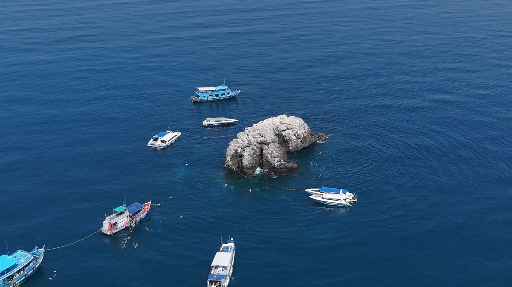
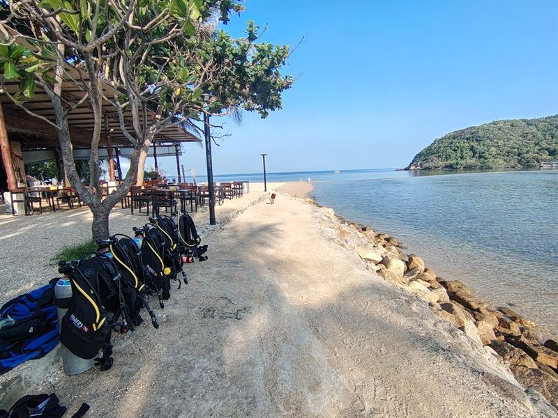

Koh Tao
El centro comercial
- Unos 80 centros de buceo en una isla pequeña
- Más puntos de buceo cerca de la costa
- Normalmente los cursos más baratos
- Joven, social y llena de energía
- Sail Rock una media hora más lejos, y no todos los días

Inicio / Koh Phangan vs Koh Tao
Dos islas a una hora de distancia que comparten el mejor punto de buceo del golfo. Tenemos centro en las dos, así que esta es nuestra opinión sincera sobre lo que cambia y sobre cuál te encaja a ti.
La respuesta corta
Koh Tao es uno de los destinos de buceo con más actividad del mundo. Koh Phangan es más tranquila, con menos centros y un trato más personal. El buceo en sí se comparte: desde las dos islas se bucea en Sail Rock.
Koh Tao
Koh Phangan

Sail Rock · compartido por las dos islas
Sail Rock
Sail Rock está en mar abierto entre las dos islas, y hay la misma gente vengan de donde vengan los barcos. La diferencia es cómo llegas y cuándo.

Koh Ma · a diez minutos de Chaloklum
Puntos de buceo y precios
Koh Tao tiene más puntos de buceo alrededor de la isla. Koh Phangan tiene Sail Rock, además de Koh Ma, Little Sail Rock y la plataforma petrolífera: menos sitios, pero con muchos menos buceadores.
Los cursos en Koh Tao suelen ser más baratos. La comparación que siempre hacemos: Koh Tao es como un centro comercial, donde todo cuesta un poco menos pero es más impersonal. Nosotros somos más como la tienda de tu barrio, donde sabemos cómo te llamas y cómo buceas.
El ambiente
Koh Tao es pequeña y todo está concentrado: centros de buceo, bares y gente, todo muy junto. Encaja con un público más joven. Koh Phangan es más grande y más familiar. Tiene incluso más fiesta que Koh Tao si vas al sur de la isla, pero en Chaloklum, en el norte, ni te enteras.

Un grupo pequeño, un instructor
Aprender a bucear
Son experiencias de aprendizaje distintas. Mucha gente va a Koh Tao para compartir el curso con mucha más gente, conocer a otros, pasarlo bien y coger experiencia con más inmersiones con el tiempo.
La gente que viene a Koh Phangan suele estar más centrada en el buceo, y la experiencia es más personal: un máximo de cuatro alumnos por instructor y tiempo para todas las preguntas.
¿Cuál es para ti?
Elige Koh Tao si
Elige Koh Phangan si
¿Prefieres Koh Tao? Nuestro centro hermano, The Diver's Boat Koh Tao, está allí desde 2015.
Preguntas
El mejor punto de buceo de la zona, Sail Rock, lo comparten las dos islas. Koh Tao tiene más sitios cerca de la costa y muchos más centros de buceo; Koh Phangan es más tranquila, con grupos más pequeños y un trato más personal. Ninguna es mejor: encajan con personas distintas.
Normalmente sí. Con unos 80 centros de buceo compitiendo, los precios en Koh Tao están entre los más bajos que vas a encontrar. En Koh Phangan pagas un poco más por grupos más pequeños y una atención más personal.
Unos 80 en Koh Tao y unos 15 en Koh Phangan, que es una isla mucho más grande.
Desde Chaloklum, en la costa norte de Koh Phangan, se tarda una hora aproximadamente. Desde Koh Tao se tarda una media hora más, y no todos los centros van todos los días.
No. Las grandes fiestas están en el sur de la isla. El norte, donde está Chaloklum, es tranquilo y familiar, y no notarías las fiestas en absoluto.
Sí. Hay la misma gente vengan de donde vengan los barcos. Salimos de Chaloklum una hora y cuarto después que los demás barcos, así que normalmente tenemos la segunda inmersión para nosotros solos.
Cuéntanos cómo te gusta viajar y qué buscas en el buceo, y te daremos una respuesta sincera, aunque sea "vete a Koh Tao".